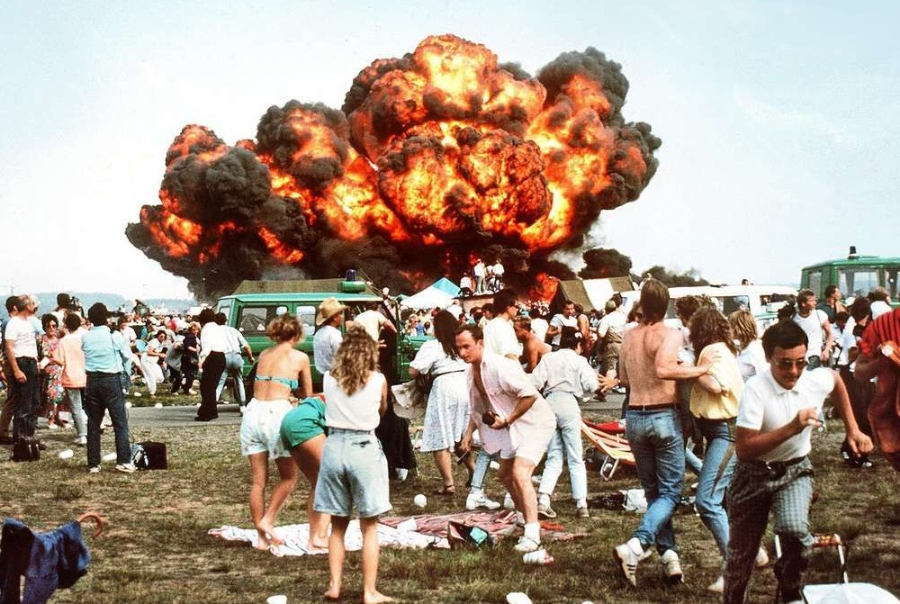

THE FLANNAN ISLES LIGHTHOUSE MYSTERY
On December 15, 1900, a passing steamer noted that the light was out at the newly built Flannan Isles Lighthouse, located on Eilean Mòr, a remote and uninhabited island off the western coast of Scotland. Due to severe weather, the relief ship Hesperus was unable to reach the island until December 26. When relief keeper Joseph Moore finally rowed ashore, he was met with a chilling silence. The island was abandoned. The three seasoned keepers—James Ducat, Thomas Marshall, and Donald MacArthur—had vanished without a trace.

The Mid-Air Collision: At 3:44 PM, tragedy struck at the exact moment of the crossover. The solo pilot, Lt. Col. Ivo Nutarelli, arrived at the intersection point too early and at too low an altitude. His jet (Pony 10) slammed into the lead aircraft of the left formation, shearing off its tail. The lead jet spiraled out of control and struck a third aircraft before crashing into a parked medevac helicopter on the taxiway. Meanwhile, Nutarelli’s solo jet—now a flaming, ballistic mass of wreckage—continued its momentum toward the spectator area. It cartwheeled through a concertina-wire fence and plowed directly into the most densely packed section of the crowd before coming to rest against an ice cream van.
A Crisis of Coordination: The immediate aftermath was a scene of apocalyptic chaos. The crash released a massive fireball of aviation fuel that engulfed hundreds of people. The rescue effort was severely hampered by a lack of coordination between the U.S. military and German civil authorities. Differences in medical standards (such as intravenous catheter sizes), language barriers, and restricted access for German ambulances created a bottleneck in treating the hundreds of burn victims. Many severely injured people were transported to hospitals in civilian cars or on the flatbeds of trucks due to the overwhelming number of casualties.
Key Facts
Date: August 28, 1988
Location: Ramstein Air Base, West Germany (now Germany)
Casualties: 70 dead
Cause: Pilot error during a high-speed "crossover" maneuver, resulting in a mid-air collision that sent a flaming aircraft directly into the spectator area.
The Ramstein disaster claimed 70 lives (including three pilots) and injured over 500 people, making it the deadliest air show accident in history at the time. It led to an immediate, temporary ban on air shows in West Germany and sparked a total rewrite of international air show safety protocols. New regulations mandated that all high-speed maneuvers must be performed parallel to the crowd line rather than toward it, and strict "minimum separation distances" were established to ensure that in the event of a collision, wreckage would fall onto the runway rather than into the spectator zone.